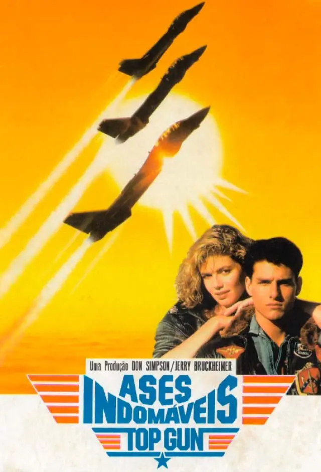

Top Gun é um clássico do cinema de ação lançado em 1986, realizado por Tony Scott e protagonizado por Tom Cruise no papel do piloto Pete "Maverick" Mitchell. O filme acompanha o treino intenso de pilotos de elite na prestigiada escola de caças da Marinha dos Estados Unidos.
Com sequências de voo revolucionárias para a sua época e uma banda sonora icónica, o filme tornou-se um fenómeno cultural global. Unindo drama, romance e adrenalina pura, Top Gun marcou uma geração e definiu o estilo dos filmes de ação modernos.

Destaques do Filme
-
Protagonista Icónico: Tom Cruise interpreta Pete "Maverick" Mitchell, um piloto genial e rebelde.
-
Banda Sonora Inesquecível: Inclui êxitos marcantes como "Take My Breath Away", "Great Balls Of Fire" e "Danger Zone".
-
Ação em Treino Real: Filmagens impressionantes com aviões de caça F-14 Tomcat reais.
Para saber mais sobre a história e a produção do filme, visita a página oficial de Top Gun no IMDb.